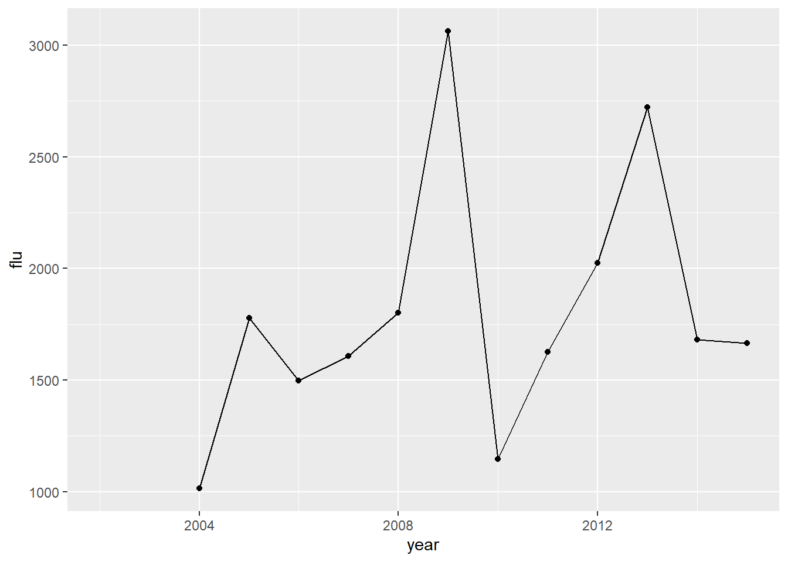
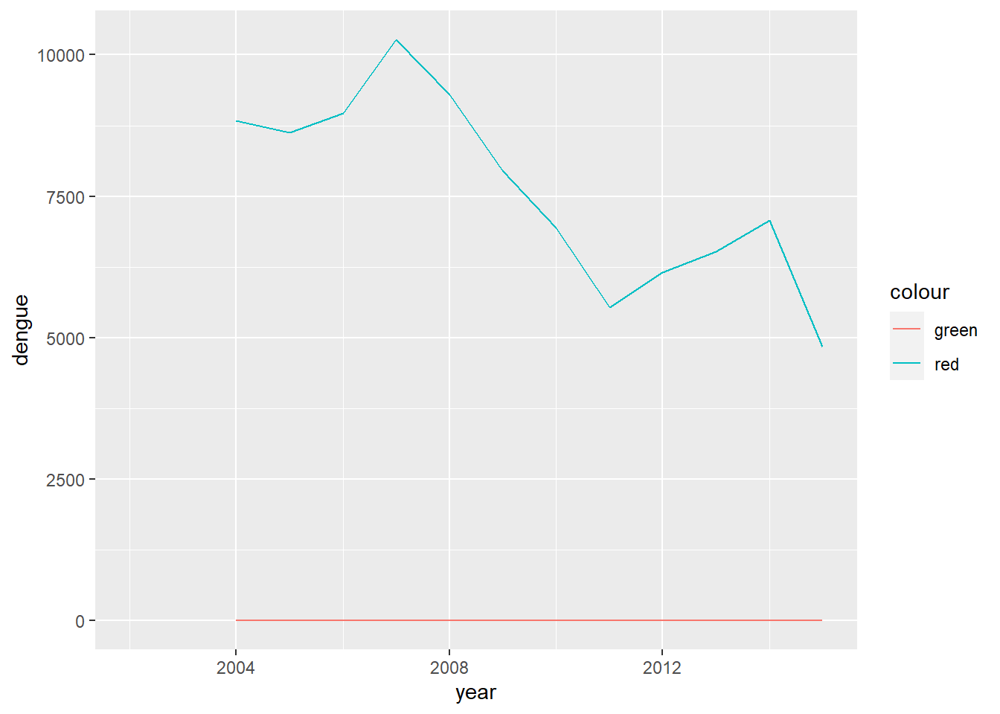
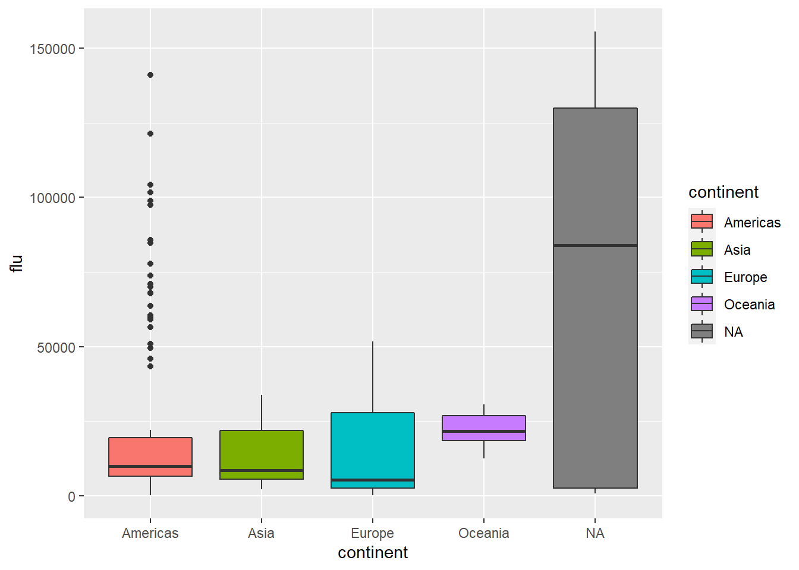

Chapter 7 Relational databases
TIPS
Be aware, the flu and dengue data contains metadata that should be stripped from the data on load. Think of a way to create valid country names that fit with the gapminder data. Remember (!) that in the end, this assignment needs to be reported by a .Rmd file for your portfolio. So save what you are doing, save your SQL scripts, make screenshots if you want, and in general design a clear and attractive report in RMarkdown to showcase your SQL/database-skills in your portfolio. You may be sending this to propspective employers in the future! (also, the portfolio is what we as teachers will be grading. But definitely think about the future rather than only about “passing the course”) Assignment
Load the flu (“./data/flu_data.csv), the dengue (.”/data/dengue_data.csv) and the gapminder ({dslabs} package) into three separate dataframes in R
Check if they are in the right shape. Is the data in the ‘tidy’ format? If not change the format to ‘tidy’
Change the country and date variables of the three tables so that they coincide in terms of data type, class and values
Store the three tables as separate (so six in total) .csv and .rds files.
In Dbeaver create a new PostgreSQL database “workflowsdb”
Using RPostgreSQL, insert the tables into the database.
Inspect the contents of the tables with SQL (in DBeaver) and save the SQL script.
Inspect the contents of the tables with dplyr (in R) and save a RMarkdown showing what you are doing.
Load the gapminder data in R and change the dataframe in such as way that you could join it to dengue and flue.
Save this clean gapminder data in the “workflowsdb” database
Perform some joins (your choice) with SQL (can be done in DBeaver or with dplyr.
Generate a joined table, and export this from the database to R.
Show some descriptive statistics with this table, and at least 3 visualisations using ggplot2.
show all of your actions in this assignment in a Rmd file, perhaps with pictures and provide text explaining and showcasing your skills.
library(tidyverse)
library(dslabs)##
## Attaching package: 'dslabs'## The following object is masked _by_ '.GlobalEnv':
##
## gapmindergapminder <- as_tibble(gapminder)
flu_data<- read.csv(url("https://raw.githubusercontent.com/ClaudiavdZ/tlsc-dsfb26v-20_workflows/main/data/flu_data.csv"), skip = 11)
flu_data <- as_tibble(flu_data)
dengue_data<- read.csv(url("https://raw.githubusercontent.com/ClaudiavdZ/tlsc-dsfb26v-20_workflows/main/data/dengue_data.csv"), skip = 11)
write.table(dengue_data , file = "dengu_data.csv")
write.table(dengue_data , file = "dengu_data.RDS")
write.table(flu_data , file = "flu_data.csv")
write.table(flu_data , file = "flu_data.RDS")
write.table(gapminder , file = "gapminder.csv")
write.table(gapminder , file = "gapminder.RDS")
library(DBI)
con <- dbConnect(RPostgres::Postgres(),
dbname = "myfirstdb",
host="localhost",
port="5432",
user="postgres",
password="Veroni36")
dbListTables(con) ## [1] "test" "gapminder" "flu_data" "dengue_data"#dbWriteTable(con, "dengue_data", dengue_data)
#dbWriteTable(con, "flu_data", flu_data)
#dbWriteTable(con, "gapminder", gapminder)
# library(janitor)
# gapminder_usd <- as.data.frame(t(gapminder))
# gapminder_usd <- gapminder_usd %>% row_to_names(row_number = 1)
flu_usd <- gather(
flu_data,
key = "country",
value = "flu",
Argentina:Uruguay
)
#seperate year from month and day
flu_usd <- separate(flu_usd, Date, into = c("year", "month", "day"), sep = "-")
#count sum of flu
flu_usd <- aggregate(flu_usd$flu, by=list(year=flu_usd$year, country=flu_usd$country), FUN=sum)
flu_usd <- flu_usd %>% rename(flu = x)
flu_usd$year <- as.integer(flu_usd$year)
dengue_usd <- gather(
dengue_data,
key = "country",
value = "dengue",
Argentina:Venezuela
)
dengue_usd <- separate(dengue_usd, Date, into = c("year", "month", "day"), sep = "-")
dengue_usd <- aggregate(dengue_usd$dengue, by=list(year=dengue_usd$year, country=dengue_usd$country), FUN=sum)
dengue_usd <- dengue_usd %>% rename(dengue = x)
dengue_usd$year <- as.integer(dengue_usd$year)
alltogether <- left_join(flu_usd, gapminder, by = c("country", "year"))
alltogether <- left_join(alltogether, dengue_usd , by = c("country", "year"))
#infant_mortelity firtelety life expantie door flu and dengue in verschillende jaren in verschillende landen
#en beetje statestiek
flu_plot <- function(dataframe, land){
dataframe %>% filter(country == land) %>%
ggplot(aes(x = year, y = flu)) +
geom_line() +
geom_point()
}
flu_plot(alltogether,"Netherlands")## Warning: Removed 2 row(s) containing missing values (geom_path).## Warning: Removed 2 rows containing missing values (geom_point).
alltogether %>% filter(country == "Argentina") %>%
ggplot() +
geom_line(aes(y = dengue,x=year, colour = "green"),) +
geom_line(aes(y = flu,x=year, colour = "red"))## Warning: Removed 2 row(s) containing missing values (geom_path).## Warning: Removed 2 row(s) containing missing values (geom_path).
ggplot(data = alltogether, aes(x = continent, y = flu)) +
geom_boxplot(aes(fill = continent))## Warning: Removed 72 rows containing non-finite values (stat_boxplot).
shapiro.test(alltogether$fertility)##
## Shapiro-Wilk normality test
##
## data: alltogether$fertility
## W = 0.84528, p-value < 2.2e-16shapiro.test(alltogether$flu)##
## Shapiro-Wilk normality test
##
## data: alltogether$flu
## W = 0.70363, p-value < 2.2e-16shapiro.test(alltogether$dengue)##
## Shapiro-Wilk normality test
##
## data: alltogether$dengue
## W = 0.91218, p-value = 0.0009743shapiro.test(alltogether$infant_mortality)##
## Shapiro-Wilk normality test
##
## data: alltogether$infant_mortality
## W = 0.75988, p-value < 2.2e-16shapiro.test(alltogether$life_expectancy)##
## Shapiro-Wilk normality test
##
## data: alltogether$life_expectancy
## W = 0.93264, p-value = 9.214e-12shapiro.test(alltogether$gdp)##
## Shapiro-Wilk normality test
##
## data: alltogether$gdp
## W = 0.53327, p-value < 2.2e-16shapiro.test(alltogether$population)##
## Shapiro-Wilk normality test
##
## data: alltogether$population
## W = 0.74646, p-value < 2.2e-16